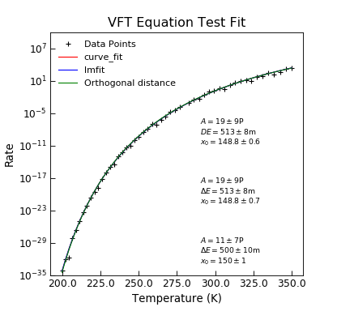

VFTEquation¶
-
class
Stoner.Fit.VFTEquation(*args, **kwargs)[source]¶ Bases:
lmfit.model.ModelVogel-Flucher-Tammann (VFT) Equation without T dependendent prefactor.
Parameters: - x (array) – Temperature in K
- A (float) – Prefactror (not temperature dependent)
- DE (float) – Energy barrier in eV
- x_0 (float) – Offset temeprature in K
Returns: Rates according the VFT equation.
The VFT equation is defined as as \(\tau = A\exp\left(\frac{DE}{x-x_0}\right)\) and represents a modifed form of the Arrenhius distribution with a freezing point of \(x_0\).
See
Stoner.Fit.vftEquation()for an example.Example
"""Example of Arrhenius Fit.""" from Stoner import Data import Stoner.Fit as SF from numpy import logspace,log10 from numpy.random import normal #Make some data T=logspace(log10(200),log10(350),51) params=(1E16,0.5,150) noise=0.5 R=SF.vftEquation(T,*params)*normal(size=len(T),scale=noise,loc=1.0) dR=SF.vftEquation(T,*params)*noise d=Data(T,R,dR,setas="xye",column_headers=["T","Rate"]) #Curve_fit on its own d.curve_fit(SF.vftEquation,p0=params,result=True,header="curve_fit") # lmfit using lmfit guesses fit=SF.VFTEquation() p0=params d.lmfit(fit,p0=p0,result=True,header="lmfit") d.setas="xyeyyy" d.figure(dpi=300) d.plot(fmt=["k+","r-","b-"]) d.yscale="log" d.ylim=(1E-35,1E10) d.annotate_fit(SF.vftEquation,x=290,y=100,fontdict={"size":"x-small"},mode="eng") d.annotate_fit(SF.VFTEquation,x=240,y=100,prefix="VFTEquation",fontdict={"size":"x-small"},mode="eng") d.title="VFT Equation Test Fit" d.ylabel="Rate" d.xlabel="Temperature (K)"
Attributes Summary
display_namesMethods Summary
guess(data[, x])Guess paramneters from a set of data. Attributes Documentation
-
display_names= ['A', '\\Delta E', 'x_0']¶
Methods Documentation

{kind=link}
{kind=link}